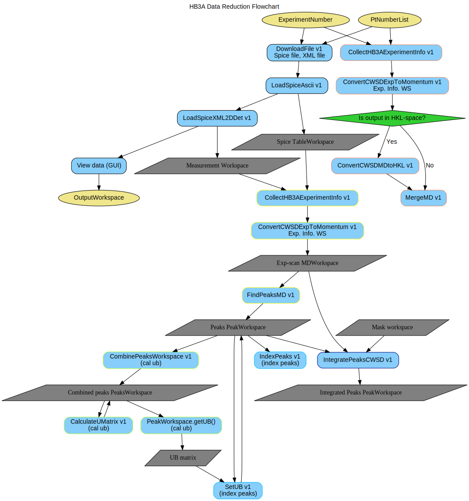

\(\renewcommand\AA{\unicode{x212B}}\)
IntegratePeaksCWSD v1¶
{kind=link}
IntegratePeaksCWSD dialog.¶
Summary¶
Integrate single-crystal peaks in reciprocal space, for MDEventWorkspaces from reactor-source single crystal diffractometer.
See Also¶
IntegratePeaksHybrid, IntegratePeaksMDHKL, IntegratePeaksMD, IntegratePeaksUsingClusters
Properties¶
Name |
Direction |
Type |
Default |
Description |
|---|---|---|---|---|
InputWorkspace |
Input |
Mandatory |
An input MDEventWorkspace. |
|
PeaksWorkspace |
Input |
PeaksWorkspace |
A PeaksWorkspace containing the peaks to integrate. |
|
OutputWorkspace |
Output |
PeaksWorkspace |
Mandatory |
The output PeaksWorkspace will be a copy of the input PeaksWorkspace with the peaks’ integrated intensities. |
MaskWorkspace |
Input |
MaskWorkspace |
Output Masking Workspace |
|
PeakCentre |
Input |
dbl list |
A comma separated list for peak centre in Q-sample frame. Its length is either 3 (Qx, Qy, Qz) or 0. If peak center is defined, then all the data among all the runs will be integrated in respect to this peak center. Otherwise, the peaks that will be integrated shall be found in the given peak workspace. |
|
PeakRadius |
Input |
number |
Optional |
Radius of a peak. |
MergePeaks |
Input |
boolean |
True |
In case that there are more than 1 run number in the given PeaksWorkspace and MDEVentWorkspace, if it is set to true, then the peaks’ intensities will be merged. |
NormalizeByMonitor |
Input |
boolean |
False |
If selected, then all the signals will be normalized by monitor counts.Otherwise, the output peak intensity will be just simple addition of peak intensity.It is only applied to the situation that Mergepeaks is not selected. |
NormalizeByTime |
Input |
boolean |
True |
It selected, then all the signals will be normalized by time in the case that the counting time is very short and thus the beam monitor is not accurate. |
ScaleFactor |
Input |
number |
1000 |
If NormalizeByMonitor or NormalizeByTime is selected, the intensity will be scaled by this factor. |
Description¶
This algorithm performs integration of single-crystal peaks … …
Inputs¶
The algorithms takes 2 mandatory input workspaces and 1 optional workspace:
A MDEventWorkspace containing the events in multi-dimensional space.
A PeaksWorkspace containing the peaks to be integrated.
An optional MaskWorkspace to mask the pixels on the detector
Calculations¶
There are a few of algorithms that are or will be supported to integrate single crystal diffraction peaks measured by a constant-wavelength reactor-based diffractometer (aka. 4-circle).
Simple Peak Integration¶
Integration is performed by summing the signal from all MDEvents that are not masked. The integrated value will be normalized by the monitor counts.
The assumption is to load an experiment point (Pt) and convert to MDEventWorkspace in Q-space. This Pt, i.e., workspace, contains at most one peak. Algorithm FindPeaksMD is able to find a peak in the MDEventWorkspace and output to a PeaksWorkspace. A UB matrix is set to this PeaksWorkspace as an option.
- The pseduo-code of this algorithm is:
Go over all the MDEvents;
For Pt. (aka, run number) i, its integrated intensity \(I_{i}\) is calculated as \(I_{i} = \sum_{d=0}^{256\times 256}\frac{s_d}{m}\), where \(s_i\) is the signal of detector i, and m is the monitor counts;
- Here is how this peak integration algorithm is applied to GUI
Find out all the run numbers by experiment number and scan number;
Execute FindPeaksMD() on all runs (i.e., Pts);
Calculate peak center by \(\vec{p} = \frac{1}{\sum_i C_i} \sum_i C_i * \vec{p}_i\), where \(\vec{p}\) is the center of the peak, \(C_i\) is the bin count of run i;
Execute IntegratePeaksCWSD() to integrate peak for each run (or Pt.) regardless whether a peak is found;
Loop all the Pt. and sum the intensity as \(I = \sum_i I_i\), where :math:
Calculation of integrated background¶
- There are two approaches that are proposed to estimate integrated background.
Simple background removal (3D to 2D)
Assuming that \(r_p\) and \(r_b\) are defined for the radius of peak and background respectively.
Calculate \(I_p\) by integrating the signals within \(r_p\);
Calculate \(I_pb\) by integrating the signals within \(r_b\);
Then integrated background \(I_b = I_pb - I_p\);
Rock scan
Outputs¶
Here are some values to be output.
\(I_{scan} \cdot sin(2\theta)\) for each scan with \(2\theta\) fixed, where \(2\theta\) is to the center of the detector.
Masking¶
Algorithm IntegratePeaksCWSD supports masking detectors. An optional MaskWorkspace will define all the detectors that will be masked.
Because the reactor-based single crystal diffratometer may have a moving detector, the best way to mark a detector to be masked is by its original detector ID.
Background Subtraction¶
The background signal within PeakRadius is calculated by scaling the background signal density in the shell to the volume of the peak:
…
Workflow¶
Usage¶
Example - IntegratePeaks:
Output:
Categories: AlgorithmIndex | MDAlgorithms\Peaks | Crystal\Integration
Source¶
C++ header: IntegratePeaksCWSD.h
C++ source: IntegratePeaksCWSD.cpp